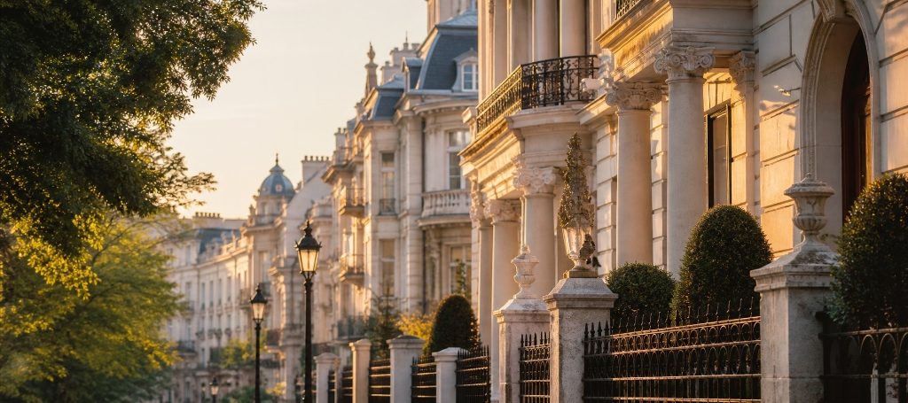

Ubicación, criterio y tiempopara generar valor real.
Seleccionamos entornoscon valor real.
Analizamos, planificamos,decidimos con rigor.
Patrimonio parael largo plazo.
Entornos bien elegidos,que perduran en el tiempo.